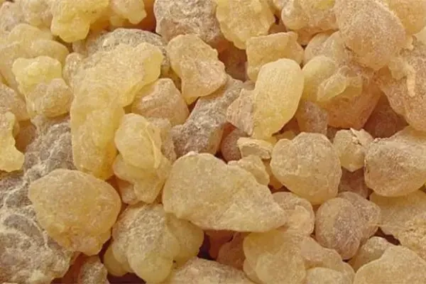

عرق سوس
جذر نباتي لخلطات النكهات والمشروبات؛ يتم تأكيد الهوية والمتطلبات.
ملف المنتج ↗تصفح الجذور والراتنجات، والأشكال المتاحة للاستفسار، ومتطلبات التوريد والمواصفات لدى فيردليف.
الهوية النباتية وحجم الجسيمات والرطوبة والشوائب.
جذر نباتي لخلطات النكهات والمشروبات؛ يتم تأكيد الهوية والمتطلبات.
ملف المنتج ↗
راتنج طبيعي؛ يتطلب التوريد تأكيد النوع النباتي والدرجة والغرض من الاستخدام.
ملف المنتج ↗
جذمور عطري لتصنيع الأغذية والمشروبات.
ملف المنتج ↗